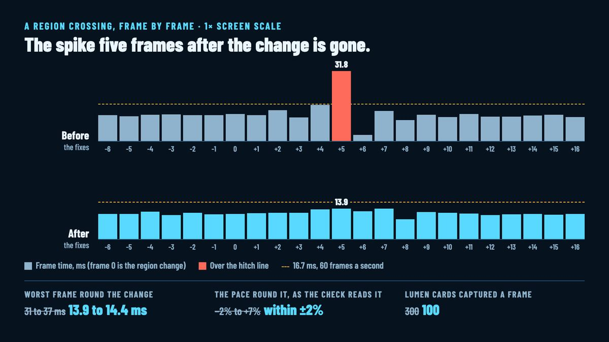

The crossing hitch: three wrong checks and five real causes
Walking from one region into the next is meant to be seamless: no fade, no hold, the seat and the camera kept. It mostly was, and a few frames after the change the game hitched. The hidden run that measured it flagged the crossing on some runs and not others, which is the worst kind of result. Today an agent found that the checks were wrong in three ways and the hitch was real in five, and fixed all of it.

What the checks got wrong
The run walks a Prospector through a passage into the next region and records every frame's time and the unit's position. Three things in how it judged the numbers made it flaky. It measured the unit's pace over a fixed slice of time, but the game draws at about 84 frames a second on this Mac while the unit steps on the 60 Hz input ticks, so a frame moves it zero, one or two steps, and the pace read 7% high or low depending on where the frames fell against the ticks. The passage bends, and the check counted the bend as the unit drifting off its line. And the hitch window closed 3 frames after the change while the spike sat at frame 5: the game thread's share of the change lands a frame after it and the render thread's a few frames on.
The check now counts input ticks (each step the steady size within a tenth, every move a whole number of steps, the steps keeping within 2 of the clock), compares the walk against the passage's own line, and watches from 2 frames before the change to 8 after.
What the hitch was
Once the window covered it, a trace showed the frame at +5 at 31 to 37 ms, two and a half times a normal frame, and named five causes. The cockpit and the pilot overlay were rebuilt for the unit's new id, though the unit itself was kept, and the overlay's plate was read back from the GPU on the render thread. Model meshes were looked up through their file path even when they were already in memory. The first Brood model was loaded on the game thread the first time one came into view, and the new region's bugs were in view. The arrival banner, the one naming the region you've entered, was baked at the change and read back at once. And the global illumination captured 300 of the new region's surface cards in one frame.
Each one is gone. The cockpit and the overlay survive the id change. Meshes are found in memory before any load. The Brood's models load a while after the session starts, with their draw batches, so the first bug costs nothing on sight. The banners are baked as each region round the pilot is made, their plates cached by size, and copied back by a ticker once the GPU is calm and two seconds after the bake, since a readback on Metal waits for the whole GPU to go idle, about 18 ms, and never at all on a 2× screen. The illumination captures 100 cards a frame and spreads the rest.
The worst frame round the change, at 1× screen scale, went from 31 to 37 ms over the runs that had the window right to 13.9 to 14.4 on a quiet Mac, under the 16.7 ms of 60 frames a second, and the unit's pace through the change stays within 2% of its pace before it. Two runs made while another worktree was building beside them still spiked, so the five-in-a-row pass the task asks for waits for a quiet machine.
The launches that died
The packaged build's post left one thing open: 2 of about 35 launches of the Development package exited at once with nothing in their log. The crash reports name the cause, and it isn't the game's. The engine's low-level memory tracker starts on and is switched off once the command line is read, on the game thread, while on the Mac the Cocoa thread is already allocating in the app framework's launch; the switch takes its lock only on platforms the engine marks as multithreaded before main, which the Mac isn't, and the tracker's tag stack comes up empty. The Shipping package has no tracker, so a player never meets it. The hidden-run tool now runs a launch that died before its log opened again, up to three times, and says why from the crash report instead of handing back an empty result.
Two smaller findings from the same pass: a traced packaged run's crash on exit is the engine's own check that every memory-stack page is back, failing at teardown with tracing on, after the log and the trace are already closed, so the trace is whole; and a cooked game can't run headless, because it builds its ground and more at run time and the render data asserts without a GPU, so the tool refuses that combination instead of letting it fail later. With this, milestone 9 is closed.